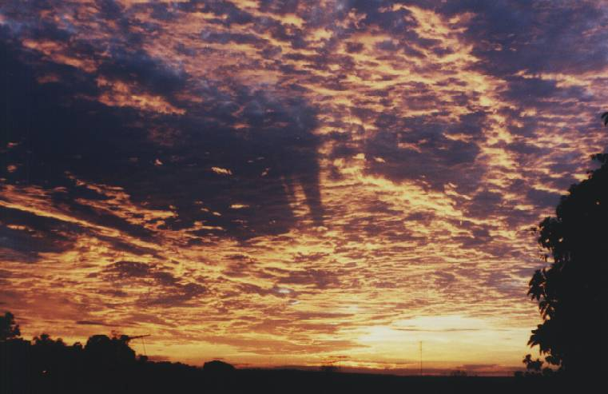
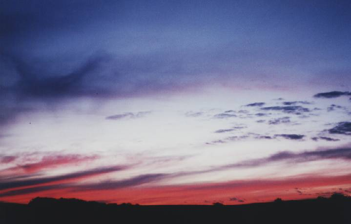
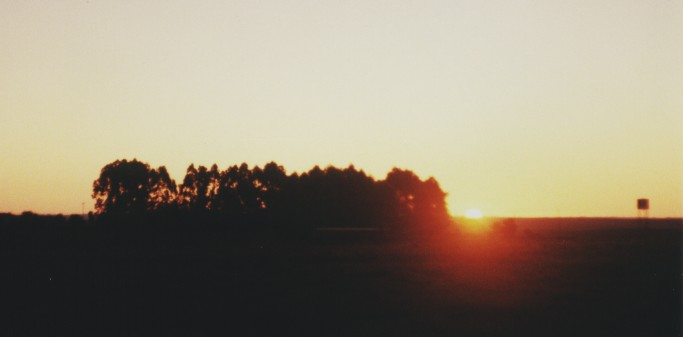
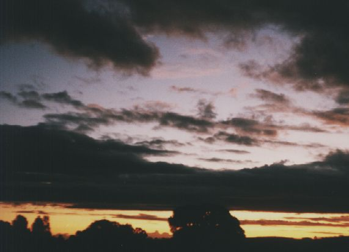
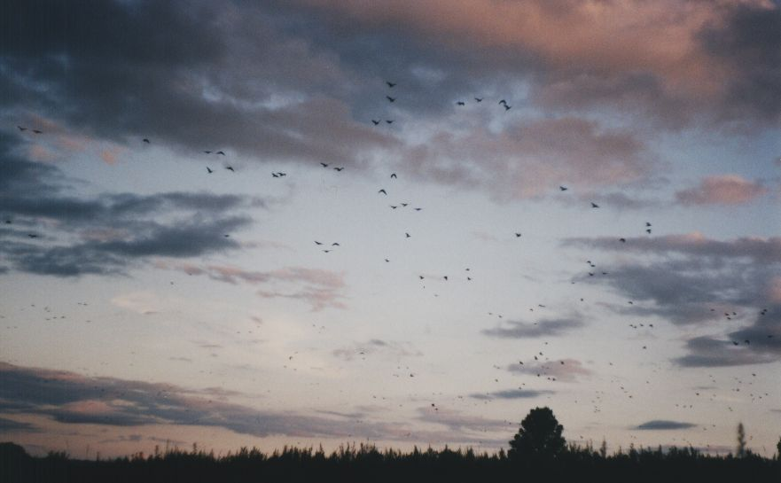
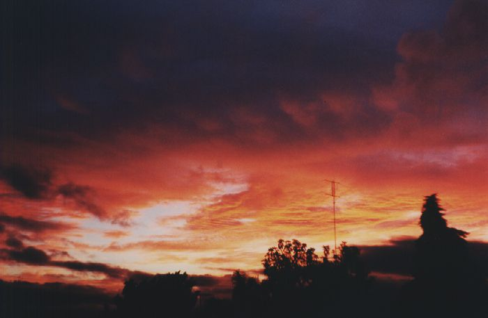

Espaço Cultural CEPEN
Galeria da Imagem
__
__
Exposição:
Lúcida Natura
Pôr-do-sol

Local: Santa Maria - RS - Brasil Foto: arquivo CEPEN / 456s / Marcello Mello
Esta imagem foi colhida momentos depois do arco-íris registrado em
455sp
.

Local: Santa Maria - RS - Brasil Foto: arquivo CEPEN / 457s / Marcello Mello

Local: Salto do Jacuí - RS - Brasil Foto: arquivo CEPEN / 457s / M. D. N. Xavier

Local: Muitos Capões - RS - Brasil Arquivo: CEPEN / 120s / M. D. N. Xavier

Local: Muitos Capões - RS - Brasil Arquivo: CEPEN / 103bc / M. D. N. Xavier
Bando de papagaios-charão com mais de 200 indivíduos.

Local: Carazinho - RS - Brasil Arquivo: CEPEN / 489s / Marcello Mello

 __
__